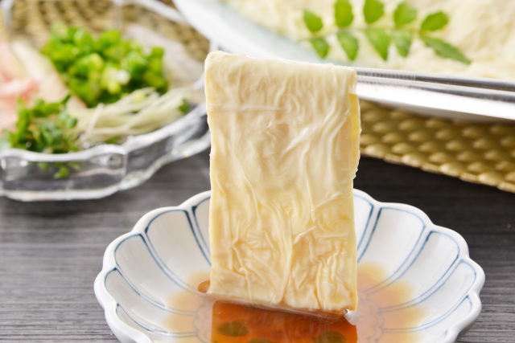
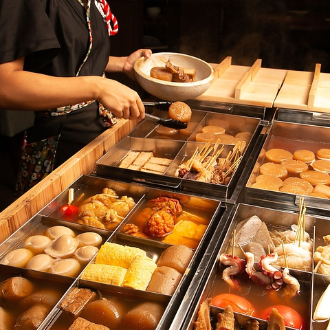

food-yuba-cover.jpgYuba
- What it is
- The skin that forms on the surface of heated soy milk
- Season
- All year
- Where
- Nikko, and to a lesser extent Kyoto
- Price
- ¥700–1,500 a dish · ¥1,000 a pack to take home
- Served
- Raw, fried, simmered in dashi, or rolled and steamed
- Allergens
- Soy
What it is
Heat soy milk and a skin forms on the surface. Lift it off with a stick and another one forms underneath. Do that all morning and you have yuba.
It's been made in Nikko for centuries because the mountain temples ate no meat and needed something with protein in it, and the town still has makers who do nothing else. The best of them do it entirely by hand, one sheet at a time, starting before dawn.
There's one difference from Kyoto worth knowing about, and it's the reason Nikko people get irritated when the two get lumped together. In Kyoto the sheet is lifted from one edge, so you get a single thin layer, and they write it 湯葉. In Nikko it's lifted from the middle with a stick, which folds it back on itself into a double layer, and they write it 湯波. The Nikko version is thicker, chewier and much more like a food than a garnish.
It tastes faintly sweet, of soy beans and not much else, and the texture is the point — soft, slightly springy, a bit slippery. Fresh yuba and dried yuba are almost different foods. If you have only had the dried sheets in a supermarket, that isn't this.
How you will meet it
What to drink with it
Yuba is faintly sweet, high in fat and almost silent, so anything loud walks straight over it. Nobody has written this down properly, so treat the following as a starting point rather than gospel.
Raw: something cold, clean and low in acid. Sugata from Iinuma Meijō, or a Sawahime junmai.
Fried: now there's fat to cut, so you want acid and a bit of heat. A kimoto warmed to about 45° — Sōhomare is the obvious one, and Tochigi drinks most of it themselves.
In dashi: umami against umami. A yamahai at around 40° stops competing and starts agreeing.
 place-zen-nikko.jpg
place-zen-nikko.jpg artisan-ebiya-chozo.jpg
artisan-ebiya-chozo.jpg
place-taneichi-honten.jpg